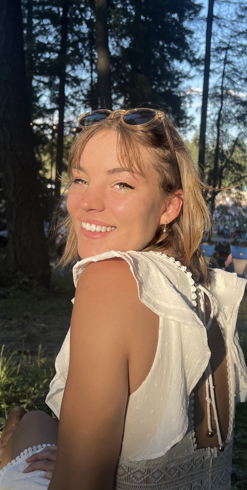

// about
"designing for stakeholders, not just shareholders."
I'm a creative at the intersection of design, technology, research, and public impact. I am currently a master's student in Human-Computer Interaction at Carnegie Mellon University.
// at a glance
// how I got here
from farm to hci
I did not grow up around tech. I grew up on a farm in Montana, where the default mode was making things work with what you had, paying attention to the world around you, and learning by doing.
That background still shapes how I think. It is part of why I care about systems, resourcefulness, public impact, and building tools that feel useful outside a perfect lab environment.
Getting into design and technology felt less like inheriting a clear roadmap and more like building one myself. That is probably why I am drawn to interdisciplinary work: I like figuring out how things actually function, where they break, and how they might better serve real people.
// currently obsessed with
// contact